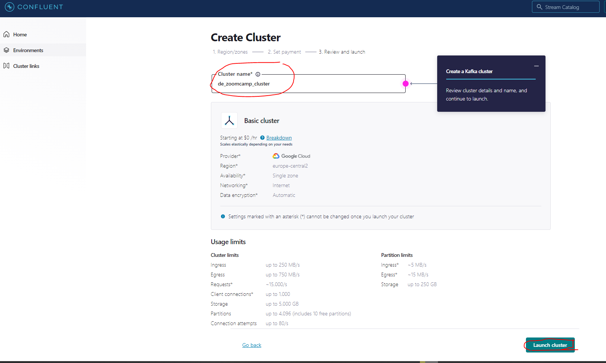
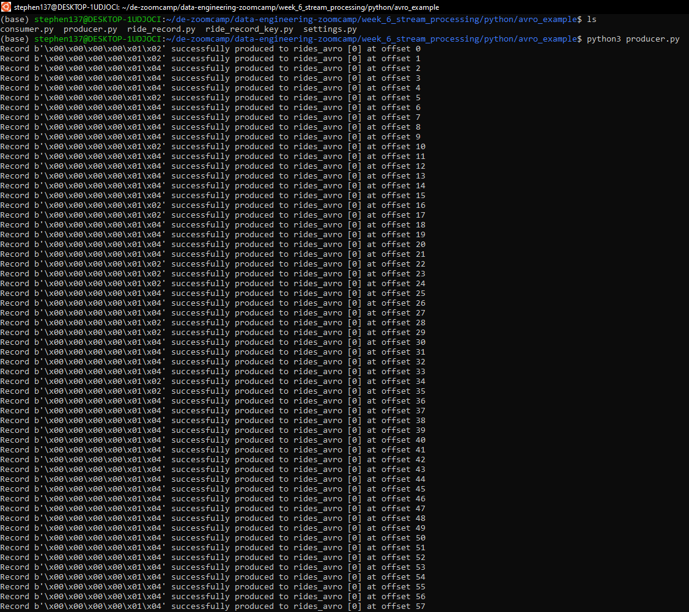
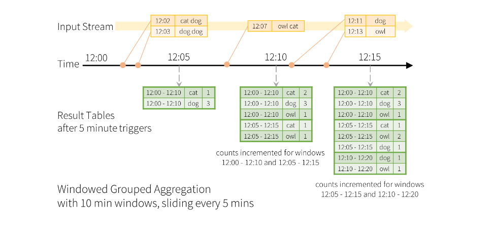

# Required connection configs for Kafka producer, consumer, and admin
bootstrap.servers=pkc-xmzwx.europe-central2.gcp.confluent.cloud:9092
security.protocol=SASL_SSL
sasl.jaas.config=org.apache.kafka.common.security.plain.PlainLoginModule required username='MT2AG6GKQMMR2ZOQ' password='Kuj0vwcPzWuu08zojjtQGtWo+EH4grftzQ++PXKL9yAf3VagJdWrjUd4udW5754C';
sasl.mechanism=PLAIN
# Required for correctness in Apache Kafka clients prior to 2.6
client.dns.lookup=use_all_dns_ips
# Best practice for higher availability in Apache Kafka clients prior to 3.0
session.timeout.ms=45000
# Best practice for Kafka producer to prevent data loss
acks=all
# Required connection configs for Confluent Cloud Schema Registry
schema.registry.url=https://{{ SR_ENDPOINT }}
basic.auth.credentials.source=USER_INFO
basic.auth.user.info={{ SR_API_KEY }}:{{ SR_API_SECRET }}In week 5 we looked at Batch Processing where the processing and analysis happens on a set of data that have already been stored over a period of time. An example is payroll and billing systems that have to be processed weekly or monthly.
This week we will be looking at Streaming data processing which happens as the data flows through a system. This results in analysis and reporting of events as it happens. An example would be fraud detection or intrusion detection. Streaming data processing means that the data will be analyzed and that actions will be taken on the data within a short period of time or near real-time, as best as it can. Real-time data processing guarantees that the real-time data will be acted on within a period of time, like milliseconds. An example would be for-real time application that purchases a stock within 20ms of receiving a desired price.
6.4 Confluent Cloud
Confluent Cloud is the industry’s only fully managed, cloud-native event streaming platform powered by Apache Kafka. Apache Kafka is an open source, distributed streaming platform that enables 100,000+ organizations globally to build event-driven applications at scale. Confluent Cloud provides a simple, scalable, resilient, and secure event streaming platform for the cloud-first enterprise, the DevOps-starved organization, or the agile developer on a mission.
Developers use Confluent Cloud to:
- analyze data at massive scale and in real-time. Stream data to Google Cloud’s big data solutions, including BigQuery, Cloud Machine Learning Engine and TensorFlow
- build event-driven applications. Combine Confluent Cloud pub/sub messaging services with Google Cloud Functions, App Engine and Kubernetes
- provide a persistent bridge to cloud. Build a real-time data pipeline between datacenters and Google Cloud, and accelerate multi-cloud adoption
See the Quick Start guide to get up and running.
You can sign up for a 30 days free trial here and receive $400 of credit.
Create Cluster


Dashboard
API Keys
The first thing we need to do is create an API key. An API key consists of a key and a secret. Kafka API keys are required to interact with Kafka clusters in Confluent Cloud. Each Kafka API key is valid for a specific Kafka cluster. To grant API access for this Cloud organization, go here.
Cluster Settings
Topics
A Topic is a category/feed name to which records are stored and published. All Kafka records are organized into topics. Producer applications write data to topics and consumer applications read from topics. Records published to the cluster stay in the cluster until a configurable retention period has passed by.
Messages
Let’s create a dummy message :
Schema
You can use Confluent Cloud Schema Registry to manage schemas in Confluent Cloud. You enable a single Schema Registry per Confluent Cloud environment. Schema Registry is accessed over port 443.
You can create and edit schemas in a schema editor and associate them with Kafka topics. This quick start does not cover all the capabilities of Schema Registry, but rather is an introduction. For a complete guide, see Manage Schemas in Confluent Cloud.
Connectors
Confluent Cloud offers pre-built, fully managed Kafka connectors that make it easy to instantly connect your clusters to popular data sources and sinks. Connect to external data systems effortlessly with simple configuration and no ongoing operational burden.
Let’s create a Datagen Source connector which is used to generate mock data for development and testing :
Our connector setup is complete and our connector is now running :
Metrics
We can see an overview of our example topic here which shows we have produced meesages and there has been some consumption :

Let’s shut down our dummy connector to protect our credits :
Now that we have an overview, in the next section we will progress to producing and consuming some messages using code.
6.5 Kafka Producer Consumer (using Java)
What is a producer ?
A Kafka producer writes messages to a topic. A producer partitioner maps each message to a topic partition, and the producer sends a produce request to the leader of that partition. The partitioners shipped with Kafka guarantee that all messages with the same non-empty key will be sent to the same partition.
All Kafka producer libraries have a small API surface area. First configure how to connect to the Kafka cluster. Then can send records, expressed as key-value pairs, to the cluster.
What is a consumer ?
A Kafka consumer reads messages from a topic. Kafka consumers are typically part of a consumer group. A consumer group is a set of consumers which cooperate to consume data from some topics. The partitions of all the topics are divided among the consumers in the group to allow for parallelism in reading the data.”
The Kafka consumer library is similar in principle to the producer. First configure how to connect to the Kafka cluster. Then use that connection to subscribe to one or more topics. When messages are available on those topics, they come back in a collection of records which represent key/value pairs from single messages.
Let’s now create a new topic for our taxi rides data :
Clients
Clients are applications that you write in your programming language of choice. Clients allow you to send and receive data to/from Confluent by producing and consuming from Kafka topics :
Choose your language
We are now going to introduce our NY taxi rides data that we have been working with throughout this course into Kafka using the Java programming language. Kafka libraries are well maintained for Java. Python libraries are less so however we will look at some Python examples later.
Installing a Java IDE
In the course video Ankush mentioned he was using IntelliJ. I have xero Java experience but have some Python knowledge, so hopefuly it won’t be too intimidating. Let’s have a go at instlling the IDE.
Follow the installation instructions.
Install the Toolbox App
Extract the tarball to a directory that supports file execution.
Unpack the tar.gz file using the following command:
sudo tar -xzf jetbrains-toolbox-1.27.3.14493.tar.gz -C /opt- Execute the jetbrains-toolbox binary from the extracted directory to run the Toolbox App.
After you run the Toolbox App for the first time, it will automatically add the Toolbox App icon Toolbox App icon to the main menu.
- Select the product that you want to install.
Configuration using files produced by Confluent
Copy the configuration snippet for your clients
Paste the following configuration data into a file called client.properties
Install the required libraries
Install gradle (if not already installed). Create a file called build.gradle with the following contents :
buildscript {
repositories {
mavenCentral()
}
dependencies {
classpath "gradle.plugin.com.github.jengelman.gradle.plugins:shadow:7.0.0"
}
}
plugins {
id "java"
id "idea"
id "eclipse"
}
sourceCompatibility = "1.11"
targetCompatibility = "1.11"
version = "0.0.1"
repositories {
mavenCentral()
maven {
url "https://packages.confluent.io/maven"
}
}
apply plugin: "com.github.johnrengelman.shadow"
dependencies {
implementation group: 'org.slf4j', name: 'slf4j-nop', version: '1.7.36'
implementation group: 'org.apache.kafka', name: 'kafka-clients', version: '3.3.1'
}
jar {
manifest {
attributes(
"Class-Path": configurations.compileClasspath.collect { it.getName() }.join(" "),
"Main-Class": "examples.ProducerExample"
)
}
}
shadowJar {
archiveBaseName = "kafka-java-getting-started"
archiveClassifier = ''
}Produce data
First, load producer configuration settings from a local file (based on the client properties above).
import org.apache.kafka.clients.producer.*;
import java.io.*;
import java.nio.file.*;
import java.util.*;
public static Properties loadConfig(final String configFile) throws IOException {
if (!Files.exists(Paths.get(configFile))) {
throw new IOException(configFile + " not found.");
}
final Properties cfg = new Properties();
try (InputStream inputStream = new FileInputStream(configFile)) {
cfg.load(inputStream);
}
return cfg;
}
final Properties props = loadConfig("client.properties");Next, create a producer based on the code snippet below :
Producer<String, String> producer = new KafkaProducer<>(props);
producer.send(new ProducerRecord<>("my-topic", "key", "value"));
producer.close();Learn more
- Check out the full getting started tutorial
- For the Java client API, check out the Java documentation
- Try out Kafka Streams to unlock powerful features such as real-time joins, aggregations, filters, and exactly-once processing
Configuration using files included by Ankush Khanna
Ride.java
package org.example.data;
import java.nio.DoubleBuffer;
import java.time.LocalDate;
import java.time.LocalDateTime;
import java.time.format.DateTimeFormatter;
public class Ride {
public Ride(String[] arr) {
VendorID = arr[0];
tpep_pickup_datetime = LocalDateTime.parse(arr[1], DateTimeFormatter.ofPattern("yyyy-MM-dd HH:mm:ss"));
tpep_dropoff_datetime = LocalDateTime.parse(arr[2], DateTimeFormatter.ofPattern("yyyy-MM-dd HH:mm:ss"));
passenger_count = Integer.parseInt(arr[3]);
trip_distance = Double.parseDouble(arr[4]);
RatecodeID = Long.parseLong(arr[5]);
store_and_fwd_flag = arr[6];
PULocationID = Long.parseLong(arr[7]);
DOLocationID = Long.parseLong(arr[8]);
payment_type = arr[9];
fare_amount = Double.parseDouble(arr[10]);
extra = Double.parseDouble(arr[11]);
mta_tax = Double.parseDouble(arr[12]);
tip_amount = Double.parseDouble(arr[13]);
tolls_amount = Double.parseDouble(arr[14]);
improvement_surcharge = Double.parseDouble(arr[15]);
total_amount = Double.parseDouble(arr[16]);
congestion_surcharge = Double.parseDouble(arr[17]);
}
public Ride(){}
public String VendorID;
public LocalDateTime tpep_pickup_datetime;
public LocalDateTime tpep_dropoff_datetime;
public int passenger_count;
public double trip_distance;
public long RatecodeID;
public String store_and_fwd_flag;
public long PULocationID;
public long DOLocationID;
public String payment_type;
public double fare_amount;
public double extra;
public double mta_tax;
public double tip_amount;
public double tolls_amount;
public double improvement_surcharge;
public double total_amount;
public double congestion_surcharge;
}JsonProducer.java
package org.example;
import com.opencsv.CSVReader;
import com.opencsv.exceptions.CsvException;
import org.apache.kafka.clients.producer.*;
import org.apache.kafka.streams.StreamsConfig;
import org.example.data.Ride;
import java.io.FileReader;
import java.io.IOException;
import java.time.LocalDateTime;
import java.util.List;
import java.util.Properties;
import java.util.concurrent.ExecutionException;
import java.util.stream.Collectors;
public class JsonProducer {
private Properties props = new Properties();
public JsonProducer() {
props.put(StreamsConfig.BOOTSTRAP_SERVERS_CONFIG, "pkc-xmzwx.europe-central2.gcp.confluent.cloud:9092"); #use CONFLUENT config
props.put("security.protocol", "SASL_SSL");
props.put("sasl.jaas.config", "org.apache.kafka.common.security.plain.PlainLoginModule required username='"+Secrets.KAFKA_CLUSTER_KEY+"' password='"+Secrets.KAFKA_CLUSTER_SECRET+"';");
props.put("sasl.mechanism", "PLAIN");
props.put("client.dns.lookup", "use_all_dns_ips");
props.put("session.timeout.ms", "45000");
props.put(ProducerConfig.ACKS_CONFIG, "all");
props.put(ProducerConfig.KEY_SERIALIZER_CLASS_CONFIG, "org.apache.kafka.common.serialization.StringSerializer");
props.put(ProducerConfig.VALUE_SERIALIZER_CLASS_CONFIG, "io.confluent.kafka.serializers.KafkaJsonSerializer");
}
public List<Ride> getRides() throws IOException, CsvException {
var ridesStream = this.getClass().getResource("Dats/rides.csv"); #Modify file path
var reader = new CSVReader(new FileReader(ridesStream.getFile()));
reader.skip(1);
return reader.readAll().stream().map(arr -> new Ride(arr))
.collect(Collectors.toList());
}
public void publishRides(List<Ride> rides) throws ExecutionException, InterruptedException {
KafkaProducer<String, Ride> kafkaProducer = new KafkaProducer<String, Ride>(props);
for(Ride ride: rides) {
ride.tpep_pickup_datetime = LocalDateTime.now().minusMinutes(20);
ride.tpep_dropoff_datetime = LocalDateTime.now();
var record = kafkaProducer.send(new ProducerRecord<>("taxi-rides-ny-137", String.valueOf(ride.DOLocationID), ride), (metadata, exception) -> {
if(exception != null) {
System.out.println(exception.getMessage());
}
});
System.out.println(record.get().offset());
System.out.println(ride.DOLocationID);
Thread.sleep(500);
}
}
public static void main(String[] args) throws IOException, CsvException, ExecutionException, InterruptedException {
var producer = new JsonProducer();
var rides = producer.getRides();
producer.publishRides(rides);
}
}Secrets.java
package org.example;
public class Secrets {
public static final String KAFKA_CLUSTER_KEY = "REPLACE_WITH_YOUR_KAFKA_CLUSTER_KEY"; ##use CONFLUENT config
public static final String KAFKA_CLUSTER_SECRET = "REPLACE_WITH_YOUR_KAFKA_CLUSTER_SECRET"; #use CONFLUENT config
public static final String SCHEMA_REGISTRY_KEY = "REPLACE_WITH_SCHEMA_REGISTRY_KEY"; #use CONFLUENT config
public static final String SCHEMA_REGISTRY_SECRET = "REPLACE_WITH_SCHEMA_REGISTRY_SECRET"; #use CONFLUENT config
}build.gradle
plugins {
id 'java'
id "com.github.davidmc24.gradle.plugin.avro" version "1.5.0"
}
group 'org.example'
version '1.0-SNAPSHOT'
repositories {
mavenCentral()
maven {
url "https://packages.confluent.io/maven"
}
}
dependencies {
implementation 'org.apache.kafka:kafka-clients:3.3.1'
implementation 'com.opencsv:opencsv:5.7.1'
implementation 'io.confluent:kafka-json-serializer:7.3.1'
implementation 'org.apache.kafka:kafka-streams:3.3.1'
implementation 'io.confluent:kafka-avro-serializer:7.3.1'
implementation 'io.confluent:kafka-schema-registry-client:7.3.1'
implementation 'io.confluent:kafka-streams-avro-serde:7.3.1'
implementation "org.apache.avro:avro:1.11.0"
testImplementation 'org.junit.jupiter:junit-jupiter-api:5.8.1'
testRuntimeOnly 'org.junit.jupiter:junit-jupiter-engine:5.8.1'
testImplementation 'org.apache.kafka:kafka-streams-test-utils:3.3.1'
}
sourceSets.main.java.srcDirs = ['build/generated-main-avro-java','src/main/java']
test {
useJUnitPlatform()
}Copying files from Windows to Ubuntu
https://linuxhint.com/copy-files-from-windows-ubuntu-wsl-same-host/#:~:text=Using%20the%20File%20System,files%20from%20Windows%20to%20Ubuntu.sudo cp /mnt/c/Users/User/Downloads/'jetbrains-toolbox-1.27.3.14493 (1).gz' ."C:\Users\User\Downloads\eclipse-java-2023-03-R-linux-gtk-x86_64.tar.gz"https://www.youtube.com/watch?v=WUrDUZw6G70https://www.testingdocs.com/questions/how-to-launch-eclipse-from-terminal-in-linux/6.6 Kafka Configuration
https://kafka.apache.org/documentation/#configuration
13.1 Kafka Streaming using Python
Create Docker Network & Volume
# Create Network
docker network create kafka-spark-network
# Create Volume
docker volume create --name=hadoop-distributed-file-systemRun Services on Docker
docker-compose.yml
version: "3.6"
volumes:
shared-workspace:
name: "hadoop-distributed-file-system"
driver: local
services:
jupyterlab:
image: jupyterlab
container_name: jupyterlab
ports:
- 8888:8888
volumes:
- shared-workspace:/opt/workspace
spark-master:
image: spark-master
container_name: spark-master
environment:
SPARK_LOCAL_IP: 'spark-master'
ports:
- 8080:8080
- 7077:7077
volumes:
- shared-workspace:/opt/workspace
spark-worker-1:
image: spark-worker
container_name: spark-worker-1
environment:
- SPARK_WORKER_CORES=1
- SPARK_WORKER_MEMORY=4g
ports:
- 8083:8081
volumes:
- shared-workspace:/opt/workspace
depends_on:
- spark-master
spark-worker-2:
image: spark-worker
container_name: spark-worker-2
environment:
- SPARK_WORKER_CORES=1
- SPARK_WORKER_MEMORY=4g
ports:
- 8082:8081
volumes:
- shared-workspace:/opt/workspace
depends_on:
- spark-master
broker:
image: confluentinc/cp-kafka:7.2.0
hostname: broker
container_name: broker
depends_on:
- zookeeper
ports:
- '9092:9092'
environment:
KAFKA_BROKER_ID: 1
KAFKA_ZOOKEEPER_CONNECT: 'zookeeper:2181'
# KAFKA_LISTENER_SECURITY_PROTOCOL_MAP: PLAINTEXT:PLAINTEXT,PLAINTEXT_HOST:PLAINTEXT
# KAFKA_ADVERTISED_LISTENERS: PLAINTEXT://broker:9092,PLAINTEXT_HOST://localhost:9092
KAFKA_LISTENER_SECURITY_PROTOCOL_MAP: LISTENER_BOB:PLAINTEXT,LISTENER_FRED:PLAINTEXT
KAFKA_LISTENERS: LISTENER_BOB://broker:29092,LISTENER_FRED://broker:9092
KAFKA_ADVERTISED_LISTENERS: LISTENER_BOB://broker:29092,LISTENER_FRED://localhost:9092
KAFKA_INTER_BROKER_LISTENER_NAME: LISTENER_BOB
KAFKA_OFFSETS_TOPIC_REPLICATION_FACTOR: 1
KAFKA_GROUP_INITIAL_REBALANCE_DELAY_MS: 0
KAFKA_TRANSACTION_STATE_LOG_MIN_ISR: 1
KAFKA_TRANSACTION_STATE_LOG_REPLICATION_FACTOR: 1
schema-registry:
image: confluentinc/cp-schema-registry:7.2.0
hostname: schema-registry
container_name: schema-registry
depends_on:
- zookeeper
- broker
ports:
- "8081:8081"
environment:
# SCHEMA_REGISTRY_HOST_NAME: schema-registry # used for intercommunication
# SCHEMA_REGISTRY_KAFKASTORE_CONNECTION_URL: "zookeeper:2181" #(depreciated)
SCHEMA_REGISTRY_KAFKASTORE_BOOTSTRAP_SERVERS: "broker:29092"
SCHEMA_REGISTRY_HOST_NAME: "localhost"
SCHEMA_REGISTRY_LISTENERS: "http://0.0.0.0:8081" #(default: http://0.0.0.0:8081)
zookeeper:
image: confluentinc/cp-zookeeper:7.2.0
hostname: zookeeper
container_name: zookeeper
ports:
- '2181:2181'
environment:
ZOOKEEPER_CLIENT_PORT: 2181
ZOOKEEPER_TICK_TIME: 2000
control-center:
image: confluentinc/cp-enterprise-control-center:7.2.0
hostname: control-center
container_name: control-center
depends_on:
- zookeeper
- broker
- schema-registry
ports:
- "9021:9021"
environment:
CONTROL_CENTER_BOOTSTRAP_SERVERS: 'broker:29092'
CONTROL_CENTER_ZOOKEEPER_CONNECT: 'zookeeper:2181'
CONTROL_CENTER_SCHEMA_REGISTRY_URL: "http://localhost:8081"
CONTROL_CENTER_REPLICATION_FACTOR: 1
CONTROL_CENTER_INTERNAL_TOPICS_PARTITIONS: 1
CONTROL_CENTER_MONITORING_INTERCEPTOR_TOPIC_PARTITIONS: 1
CONFLUENT_METRICS_TOPIC_REPLICATION: 1
PORT: 9021# Start Docker-Compose (within for kafka and spark folders)
docker compose up -dWe can see the containers have been created :
We also need to install the necessary dependencies from the command line using :
pip install -r requirements.txtrequirements.txt
kafka-python==1.4.6
confluent_kafka
requests
avro
faust
fastavroKafka Listeners – Explained
https://www.confluent.io/blog/kafka-listeners-explained/
Json Producer-Consumer Example using the kafka-python library
Our overall set up includes four python files :
settings.py
INPUT_DATA_PATH = '../resources/rides.csv'
BOOTSTRAP_SERVERS = ['localhost:9092']
KAFKA_TOPIC = 'rides_json'ride.py
from typing import List, Dict
from decimal import Decimal
from datetime import datetime
class Ride:
def __init__(self, arr: List[str]):
self.vendor_id = arr[0]
self.tpep_pickup_datetime = datetime.strptime(arr[1], "%Y-%m-%d %H:%M:%S"),
self.tpep_dropoff_datetime = datetime.strptime(arr[2], "%Y-%m-%d %H:%M:%S"),
self.passenger_count = int(arr[3])
self.trip_distance = Decimal(arr[4])
self.rate_code_id = int(arr[5])
self.store_and_fwd_flag = arr[6]
self.pu_location_id = int(arr[7])
self.do_location_id = int(arr[8])
self.payment_type = arr[9]
self.fare_amount = Decimal(arr[10])
self.extra = Decimal(arr[11])
self.mta_tax = Decimal(arr[12])
self.tip_amount = Decimal(arr[13])
self.tolls_amount = Decimal(arr[14])
self.improvement_surcharge = Decimal(arr[15])
self.total_amount = Decimal(arr[16])
self.congestion_surcharge = Decimal(arr[17])
@classmethod # creates an array from the dictionary
def from_dict(cls, d: Dict):
return cls(arr=[
d['vendor_id'],
d['tpep_pickup_datetime'][0],
d['tpep_dropoff_datetime'][0],
d['passenger_count'],
d['trip_distance'],
d['rate_code_id'],
d['store_and_fwd_flag'],
d['pu_location_id'],
d['do_location_id'],
d['payment_type'],
d['fare_amount'],
d['extra'],
d['mta_tax'],
d['tip_amount'],
d['tolls_amount'],
d['improvement_surcharge'],
d['total_amount'],
d['congestion_surcharge'],
]
)
def __repr__(self):
return f'{self.__class__.__name__}: {self.__dict__}' # on printing our Ride class, it will first print class name and then object as a dictionaryproducer.py
import csv
import json
from typing import List, Dict
from kafka import KafkaProducer
from kafka.errors import KafkaTimeoutError
from ride import Ride
from settings import BOOTSTRAP_SERVERS, INPUT_DATA_PATH, KAFKA_TOPIC
class JsonProducer(KafkaProducer):
def __init__(self, props: Dict):
self.producer = KafkaProducer(**props) # expects a set of parameters defined in settings.py
@staticmethod
def read_records(resource_path: str):
records = []
with open(resource_path, 'r') as f:
reader = csv.reader(f)
header = next(reader) # skip the header row
for row in reader:
records.append(Ride(arr=row)) # array
return records
def publish_rides(self, topic: str, messages: List[Ride]):
for ride in messages:
try:
record = self.producer.send(topic=topic, key=ride.pu_location_id, value=ride)
print('Record {} successfully produced at offset {}'.format(ride.pu_location_id, record.get().offset)) # debugging
except KafkaTimeoutError as e:
print(e.__str__())
if __name__ == '__main__':
# Config Should match with the KafkaProducer expectation
config = {
'bootstrap_servers': BOOTSTRAP_SERVERS,
'key_serializer': lambda key: str(key).encode(), # Kafka is expecting messages in binary format so need to convert before sending to Kafka
'value_serializer': lambda x: json.dumps(x.__dict__, default=str).encode('utf-8') # Kafka is expecting messages in binary format so need to convert before sending to Kafka
}
producer = JsonProducer(props=config)
rides = producer.read_records(resource_path=INPUT_DATA_PATH)
producer.publish_rides(topic=KAFKA_TOPIC, messages=rides)consumer.py
from typing import Dict, List
from json import loads
from kafka import KafkaConsumer
from ride import Ride
from settings import BOOTSTRAP_SERVERS, KAFKA_TOPIC
class JsonConsumer:
def __init__(self, props: Dict):
self.consumer = KafkaConsumer(**props)
def consume_from_kafka(self, topics: List[str]):
self.consumer.subscribe(topics)
print('Consuming from Kafka started')
print('Available topics to consume: ', self.consumer.subscription())
while True:
try:
# SIGINT can't be handled when polling, limit timeout to 1 second.
message = self.consumer.poll(1.0)
if message is None or message == {}:
continue
for message_key, message_value in message.items():
for msg_val in message_value:
print(msg_val.key, msg_val.value)
except KeyboardInterrupt:
break
self.consumer.close()
if __name__ == '__main__':
config = {
'bootstrap_servers': BOOTSTRAP_SERVERS,
'auto_offset_reset': 'earliest',
'enable_auto_commit': True,
'key_deserializer': lambda key: int(key.decode('utf-8')), # reverse of producer.py encoding
'value_deserializer': lambda x: loads(x.decode('utf-8'), object_hook=lambda d: Ride.from_dict(d)), # reverse of producer.py encoding
'group_id': 'consumer.group.id.json-example.1',
}
json_consumer = JsonConsumer(props=config)
json_consumer.consume_from_kafka(topics=[KAFKA_TOPIC])First let’s run the producer.py script which references both the settings.py and `ride.py scripts :
And let’s now run the consumer.py script which also references both the settings.py and ride.py scripts :
In the above examples we did not specify any schema.
Avro Producer-Consumer Example using the confluent-kafka library
The configuration for this example is slightly different from the previous example where we used the kafka-python library and did not specify any schema. In this example we will be using the confluent-kafka library and will be adding stability by specifying a schema. The overall set up is very similar, and includes five python files :
settings.py
INPUT_DATA_PATH = '../resources/rides.csv'
RIDE_KEY_SCHEMA_PATH = '../resources/schemas/taxi_ride_key.avsc'
RIDE_VALUE_SCHEMA_PATH = '../resources/schemas/taxi_ride_value.avsc'
SCHEMA_REGISTRY_URL = 'http://localhost:8081'
BOOTSTRAP_SERVERS = 'localhost:9092'
KAFKA_TOPIC = 'rides_avro'ride_record.py
from typing import List, Dict
class RideRecord:
def __init__(self, arr: List[str]):
self.vendor_id = int(arr[0])
self.passenger_count = int(arr[1])
self.trip_distance = float(arr[2])
self.payment_type = int(arr[3])
self.total_amount = float(arr[4])
@classmethod
def from_dict(cls, d: Dict):
return cls(arr=[
d['vendor_id'],
d['passenger_count'],
d['trip_distance'],
d['payment_type'],
d['total_amount']
]
)
def __repr__(self):
return f'{self.__class__.__name__}: {self.__dict__}'
def dict_to_ride_record(obj, ctx):
if obj is None:
return None
return RideRecord.from_dict(obj)
def ride_record_to_dict(ride_record: RideRecord, ctx):
return ride_record.__dict__ride_record_key.py
from typing import Dict
class RideRecordKey:
def __init__(self, vendor_id):
self.vendor_id = vendor_id
@classmethod
def from_dict(cls, d: Dict):
return cls(vendor_id=d['vendor_id'])
def __repr__(self):
return f'{self.__class__.__name__}: {self.__dict__}'
def dict_to_ride_record_key(obj, ctx):
if obj is None:
return None
return RideRecordKey.from_dict(obj)
def ride_record_key_to_dict(ride_record_key: RideRecordKey, ctx):
return ride_record_key.__dict__producer.py
import os
import csv
from time import sleep
from typing import Dict
from confluent_kafka import Producer
from confluent_kafka.schema_registry import SchemaRegistryClient # more stability by using Schema
from confluent_kafka.schema_registry.avro import AvroSerializer
from confluent_kafka.serialization import SerializationContext, MessageField
from ride_record_key import RideRecordKey, ride_record_key_to_dict
from ride_record import RideRecord, ride_record_to_dict
from settings import RIDE_KEY_SCHEMA_PATH, RIDE_VALUE_SCHEMA_PATH, \
SCHEMA_REGISTRY_URL, BOOTSTRAP_SERVERS, INPUT_DATA_PATH, KAFKA_TOPIC
def delivery_report(err, msg):
if err is not None:
print("Delivery failed for record {}: {}".format(msg.key(), err))
return
print('Record {} successfully produced to {} [{}] at offset {}'.format(
msg.key(), msg.topic(), msg.partition(), msg.offset()))
class RideAvroProducer:
def __init__(self, props: Dict):
# Schema Registry and Serializer-Deserializer Configurations
key_schema_str = self.load_schema(props['schema.key'])
value_schema_str = self.load_schema(props['schema.value'])
schema_registry_props = {'url': props['schema_registry.url']}
schema_registry_client = SchemaRegistryClient(schema_registry_props)
self.key_serializer = AvroSerializer(schema_registry_client, key_schema_str, ride_record_key_to_dict)
self.value_serializer = AvroSerializer(schema_registry_client, value_schema_str, ride_record_to_dict)
# Producer Configuration
producer_props = {'bootstrap.servers': props['bootstrap.servers']}
self.producer = Producer(producer_props)
@staticmethod
def load_schema(schema_path: str):
path = os.path.realpath(os.path.dirname(__file__))
with open(f"{path}/{schema_path}") as f:
schema_str = f.read()
return schema_str
@staticmethod
def delivery_report(err, msg):
if err is not None:
print("Delivery failed for record {}: {}".format(msg.key(), err))
return
print('Record {} successfully produced to {} [{}] at offset {}'.format(
msg.key(), msg.topic(), msg.partition(), msg.offset()))
@staticmethod
def read_records(resource_path: str):
ride_records, ride_keys = [], []
with open(resource_path, 'r') as f:
reader = csv.reader(f)
header = next(reader) # skip the header
for row in reader:
ride_records.append(RideRecord(arr=[row[0], row[3], row[4], row[9], row[16]]))
ride_keys.append(RideRecordKey(vendor_id=int(row[0])))
return zip(ride_keys, ride_records)
def publish(self, topic: str, records: [RideRecordKey, RideRecord]):
for key_value in records:
key, value = key_value
try:
self.producer.produce(topic=topic,
key=self.key_serializer(key, SerializationContext(topic=topic,
field=MessageField.KEY)),
value=self.value_serializer(value, SerializationContext(topic=topic,
field=MessageField.VALUE)),
on_delivery=delivery_report)
except KeyboardInterrupt:
break
except Exception as e:
print(f"Exception while producing record - {value}: {e}")
self.producer.flush()
sleep(1)
if __name__ == "__main__":
config = {
'bootstrap.servers': BOOTSTRAP_SERVERS,
'schema_registry.url': SCHEMA_REGISTRY_URL,
'schema.key': RIDE_KEY_SCHEMA_PATH,
'schema.value': RIDE_VALUE_SCHEMA_PATH
}
producer = RideAvroProducer(props=config)
ride_records = producer.read_records(resource_path=INPUT_DATA_PATH)
producer.publish(topic=KAFKA_TOPIC, records=ride_records)consumer.py
import os
from typing import Dict, List
from confluent_kafka import Consumer
from confluent_kafka.schema_registry import SchemaRegistryClient # more stability by using Schema
from confluent_kafka.schema_registry.avro import AvroDeserializer
from confluent_kafka.serialization import SerializationContext, MessageField
from ride_record_key import dict_to_ride_record_key
from ride_record import dict_to_ride_record
from settings import BOOTSTRAP_SERVERS, SCHEMA_REGISTRY_URL, \
RIDE_KEY_SCHEMA_PATH, RIDE_VALUE_SCHEMA_PATH, KAFKA_TOPIC
class RideAvroConsumer:
def __init__(self, props: Dict):
# Schema Registry and Serializer-Deserializer Configurations
key_schema_str = self.load_schema(props['schema.key'])
value_schema_str = self.load_schema(props['schema.value'])
schema_registry_props = {'url': props['schema_registry.url']}
schema_registry_client = SchemaRegistryClient(schema_registry_props)
self.avro_key_deserializer = AvroDeserializer(schema_registry_client=schema_registry_client,
schema_str=key_schema_str,
from_dict=dict_to_ride_record_key)
self.avro_value_deserializer = AvroDeserializer(schema_registry_client=schema_registry_client,
schema_str=value_schema_str,
from_dict=dict_to_ride_record)
consumer_props = {'bootstrap.servers': props['bootstrap.servers'],
'group.id': 'datatalkclubs.taxirides.avro.consumer.2',
'auto.offset.reset': "earliest"}
self.consumer = Consumer(consumer_props)
@staticmethod
def load_schema(schema_path: str):
path = os.path.realpath(os.path.dirname(__file__))
with open(f"{path}/{schema_path}") as f:
schema_str = f.read()
return schema_str
def consume_from_kafka(self, topics: List[str]):
self.consumer.subscribe(topics=topics)
while True:
try:
# SIGINT can't be handled when polling, limit timeout to 1 second.
msg = self.consumer.poll(1.0)
if msg is None:
continue
key = self.avro_key_deserializer(msg.key(), SerializationContext(msg.topic(), MessageField.KEY))
record = self.avro_value_deserializer(msg.value(),
SerializationContext(msg.topic(), MessageField.VALUE))
if record is not None:
print("{}, {}".format(key, record))
except KeyboardInterrupt:
break
self.consumer.close()
if __name__ == "__main__":
config = {
'bootstrap.servers': BOOTSTRAP_SERVERS,
'schema_registry.url': SCHEMA_REGISTRY_URL,
'schema.key': RIDE_KEY_SCHEMA_PATH,
'schema.value': RIDE_VALUE_SCHEMA_PATH,
}
avro_consumer = RideAvroConsumer(props=config)
avro_consumer.consume_from_kafka(topics=[KAFKA_TOPIC])First let’s run the producer.py script which references both the settings.py ,ride.py, and ride_record_key.py scripts :

And let’s now run the consumer.py script which also references the settings.py ,ride.py, and ride_record_key.py scripts :
Let’s now look at how we can stream data that is held in a PySpark DataFrame.
13.2 Streaming data held in a PySpark DataFrame
Build Required Images for running Spark
We already have :
- Docker containers running which hold the required Kafka services
- bridge network to enable the connection between Kafka and Spark
- Hadoop distributed file system

We also need to have the followng images set up :
- jupyterlab
- spark-worker
- spark-master
- spark-base
- cluster-base
We can check our running images using :
docker image lsWe are missing the aforementioned images. We can create them by running the following bash script from the command line :
build.sh
# -- Software Stack Version
SPARK_VERSION="3.3.1"
HADOOP_VERSION="3"
JUPYTERLAB_VERSION="3.6.1"
# -- Building the Images
docker build \
-f cluster-base.Dockerfile \
-t cluster-base .
docker build \
--build-arg spark_version="${SPARK_VERSION}" \
--build-arg hadoop_version="${HADOOP_VERSION}" \
-f spark-base.Dockerfile \
-t spark-base .
docker build \
-f spark-master.Dockerfile \
-t spark-master .
docker build \
-f spark-worker.Dockerfile \
-t spark-worker .
docker build \
--build-arg spark_version="${SPARK_VERSION}" \
--build-arg jupyterlab_version="${JUPYTERLAB_VERSION}" \
-f jupyterlab.Dockerfile \
-t jupyterlab .
That took a few minutes but appears to have completed successfully. Let’s check our images once more :
The details of how the spark-images are built in different layers can be found in this blog post written by André Perez. OK, now we can progress!
Streams example using PySpark
First we need to run the following file from the command line using :
docker compose up -dand check once again that we have all the necessary containers.
docker-compose.yml
version: "3.6"
volumes:
shared-workspace:
name: "hadoop-distributed-file-system"
driver: local
networks:
default:
name: kafka-spark-network
external: true
services:
jupyterlab:
image: jupyterlab
container_name: jupyterlab
ports:
- 8888:8888
volumes:
- shared-workspace:/opt/workspace
spark-master:
image: spark-master
container_name: spark-master
environment:
SPARK_LOCAL_IP: 'spark-master'
ports:
- 8080:8080
- 7077:7077
volumes:
- shared-workspace:/opt/workspace
spark-worker-1:
image: spark-worker
container_name: spark-worker-1
environment:
- SPARK_WORKER_CORES=1
- SPARK_WORKER_MEMORY=4g
ports:
- 8083:8081
volumes:
- shared-workspace:/opt/workspace
depends_on:
- spark-master
spark-worker-2:
image: spark-worker
container_name: spark-worker-2
environment:
- SPARK_WORKER_CORES=1
- SPARK_WORKER_MEMORY=4g
ports:
- 8084:8081
volumes:
- shared-workspace:/opt/workspace
depends_on:
- spark-master
The overall set up includes four Python scripts :
settings.py
import pyspark.sql.types as T
INPUT_DATA_PATH = '../../resources/rides.csv'
BOOTSTRAP_SERVERS = 'localhost:9092'
TOPIC_WINDOWED_VENDOR_ID_COUNT = 'vendor_counts_windowed'
PRODUCE_TOPIC_RIDES_CSV = CONSUME_TOPIC_RIDES_CSV = 'rides_csv'
RIDE_SCHEMA = T.StructType(
[T.StructField("vendor_id", T.IntegerType()),
T.StructField('tpep_pickup_datetime', T.TimestampType()),
T.StructField('tpep_dropoff_datetime', T.TimestampType()),
T.StructField("passenger_count", T.IntegerType()),
T.StructField("trip_distance", T.FloatType()),
T.StructField("payment_type", T.IntegerType()),
T.StructField("total_amount", T.FloatType()),
])producer.py
import csv
from time import sleep
from typing import Dict
from kafka import KafkaProducer
from settings import BOOTSTRAP_SERVERS, INPUT_DATA_PATH, PRODUCE_TOPIC_RIDES_CSV
def delivery_report(err, msg):
if err is not None:
print("Delivery failed for record {}: {}".format(msg.key(), err))
return
print('Record {} successfully produced to {} [{}] at offset {}'.format(
msg.key(), msg.topic(), msg.partition(), msg.offset()))
class RideCSVProducer:
def __init__(self, props: Dict):
self.producer = KafkaProducer(**props)
# self.producer = Producer(producer_props)
@staticmethod
def read_records(resource_path: str):
records, ride_keys = [], []
i = 0
with open(resource_path, 'r') as f:
reader = csv.reader(f)
header = next(reader) # skip the header
for row in reader:
# vendor_id, passenger_count, trip_distance, payment_type, total_amount
records.append(f'{row[0]}, {row[1]}, {row[2]}, {row[3]}, {row[4]}, {row[9]}, {row[16]}')
ride_keys.append(str(row[0]))
i += 1
if i == 5:
break
return zip(ride_keys, records)
def publish(self, topic: str, records: [str, str]):
for key_value in records:
key, value = key_value
try:
self.producer.send(topic=topic, key=key, value=value)
print(f"Producing record for <key: {key}, value:{value}>")
except KeyboardInterrupt:
break
except Exception as e:
print(f"Exception while producing record - {value}: {e}")
self.producer.flush()
sleep(1)
if __name__ == "__main__":
config = {
'bootstrap_servers': [BOOTSTRAP_SERVERS],
'key_serializer': lambda x: x.encode('utf-8'),
'value_serializer': lambda x: x.encode('utf-8')
}
producer = RideCSVProducer(props=config)
ride_records = producer.read_records(resource_path=INPUT_DATA_PATH)
print(ride_records)
producer.publish(topic=PRODUCE_TOPIC_RIDES_CSV, records=ride_records)consumer.py
import argparse
from typing import Dict, List
from kafka import KafkaConsumer
from settings import BOOTSTRAP_SERVERS, CONSUME_TOPIC_RIDES_CSV
class RideCSVConsumer:
def __init__(self, props: Dict):
self.consumer = KafkaConsumer(**props)
def consume_from_kafka(self, topics: List[str]):
self.consumer.subscribe(topics=topics)
print('Consuming from Kafka started')
print('Available topics to consume: ', self.consumer.subscription())
while True:
try:
# SIGINT can't be handled when polling, limit timeout to 1 second.
msg = self.consumer.poll(1.0)
if msg is None or msg == {}:
continue
for msg_key, msg_values in msg.items():
for msg_val in msg_values:
print(f'Key:{msg_val.key}-type({type(msg_val.key)}), '
f'Value:{msg_val.value}-type({type(msg_val.value)})')
except KeyboardInterrupt:
break
self.consumer.close()
if __name__ == '__main__':
parser = argparse.ArgumentParser(description='Kafka Consumer')
parser.add_argument('--topic', type=str, default=CONSUME_TOPIC_RIDES_CSV)
args = parser.parse_args()
topic = args.topic
config = {
'bootstrap_servers': [BOOTSTRAP_SERVERS],
'auto_offset_reset': 'earliest',
'enable_auto_commit': True,
'key_deserializer': lambda key: int(key.decode('utf-8')),
'value_deserializer': lambda value: value.decode('utf-8'),
'group_id': 'consumer.group.id.csv-example.1',
}
csv_consumer = RideCSVConsumer(props=config)
csv_consumer.consume_from_kafka(topics=[topic])First let’s run the producer.py script :
# Run producer
python3 producer.py
# Run consumer with default settings
python3 consumer.py0 Spark Setup
import os
os.environ['PYSPARK_SUBMIT_ARGS'] = '--packages org.apache.spark:spark-sql-kafka-0-10_2.12:3.3.1,org.apache.spark:spark-avro_2.12:3.3.1 pyspark-shell'from pyspark.sql import SparkSession
import pyspark.sql.types as T
import pyspark.sql.functions as F
spark = SparkSession \
.builder \
.appName("Spark-Notebook") \
.getOrCreate()1 Reading from Kafka Stream
1.1 Raw Kafka Stream
# default for startingOffsets is "latest"
df_kafka_raw = spark \
.readStream \
.format("kafka") \
.option("kafka.bootstrap.servers", "localhost:9092,broker:29092") \
.option("subscribe", "rides_csv") \
.option("startingOffsets", "earliest") \
.option("checkpointLocation", "checkpoint") \
.load()df_kafka_raw.printSchema()root
|-- key: binary (nullable = true)
|-- value: binary (nullable = true)
|-- topic: string (nullable = true)
|-- partition: integer (nullable = true)
|-- offset: long (nullable = true)
|-- timestamp: timestamp (nullable = true)
|-- timestampType: integer (nullable = true)
1.2 Encoded Kafka Stream
df_kafka_encoded = df_kafka_raw.selectExpr("CAST(key AS STRING)","CAST(value AS STRING)")df_kafka_encoded.printSchema()root
|-- key: string (nullable = true)
|-- value: string (nullable = true)
1.3 Structure Streaming DataFrame
def parse_ride_from_kafka_message(df_raw, schema):
""" take a Spark Streaming df and parse value col based on <schema>, return streaming df cols in schema """
assert df_raw.isStreaming is True, "DataFrame doesn't receive streaming data"
df = df_raw.selectExpr("CAST(key AS STRING)", "CAST(value AS STRING)")
# split attributes to nested array in one Column
col = F.split(df['value'], ', ')
# expand col to multiple top-level columns
for idx, field in enumerate(schema):
df = df.withColumn(field.name, col.getItem(idx).cast(field.dataType))
return df.select([field.name for field in schema])ride_schema = T.StructType(
[T.StructField("vendor_id", T.IntegerType()),
T.StructField('tpep_pickup_datetime', T.TimestampType()),
T.StructField('tpep_dropoff_datetime', T.TimestampType()),
T.StructField("passenger_count", T.IntegerType()),
T.StructField("trip_distance", T.FloatType()),
T.StructField("payment_type", T.IntegerType()),
T.StructField("total_amount", T.FloatType()),
])df_rides = parse_ride_from_kafka_message(df_raw=df_kafka_raw, schema=ride_schema)df_rides.printSchema()root
|-- vendor_id: integer (nullable = true)
|-- tpep_pickup_datetime: timestamp (nullable = true)
|-- tpep_dropoff_datetime: timestamp (nullable = true)
|-- passenger_count: integer (nullable = true)
|-- trip_distance: float (nullable = true)
|-- payment_type: integer (nullable = true)
|-- total_amount: float (nullable = true)
df_rides.show()AnalysisException: Queries with streaming sources must be executed with writeStream.start();
kafka23/04/05 22:01:10 WARN ClientUtils: Couldn't resolve server broker:29092 from bootstrap.servers as DNS resolution failed for broker -------------------------------------------
Batch: 1
-------------------------------------------
+---------+--------------------+---------------------+---------------+-------------+------------+------------+
|vendor_id|tpep_pickup_datetime|tpep_dropoff_datetime|passenger_count|trip_distance|payment_type|total_amount|
+---------+--------------------+---------------------+---------------+-------------+------------+------------+
|1 |2020-07-01 00:25:32 |2020-07-01 00:33:39 |1 |1.5 |2 |9.3 |
|1 |2020-07-01 00:03:19 |2020-07-01 00:25:43 |1 |9.5 |1 |27.8 |
|2 |2020-07-01 00:15:11 |2020-07-01 00:29:24 |1 |5.85 |2 |22.3 |
|2 |2020-07-01 00:30:49 |2020-07-01 00:38:26 |1 |1.9 |1 |14.16 |
|2 |2020-07-01 00:31:26 |2020-07-01 00:38:02 |1 |1.25 |2 |7.8 |
+---------+--------------------+---------------------+---------------+-------------+------------+------------+
writeStream is a way that we can decide how our streaming data should be outputted.
2 Sink Operation & Streaming Query
through writeStream
Output Sinks
- File Sink: stores the output to the directory
- Kafka Sink: stores the output to one or more topics in Kafka
- Foreach Sink:
- (for debugging) Console Sink, Memory Sink
Further details can be found in Output Sinks
Output Modes
- Complete: The whole Result Table will be outputted to the sink after every trigger. This is supported for aggregation queries.
- Append (default): Only new rows are added to the Result Table
- Update: Only updated rows are outputted
Output Modes differ based on the set of transformations applied to the streaming data.
Triggers
The trigger settings of a streaming query define the timing of streaming data processing. Spark streaming support micro-batch streamings schema and you can select following options based on requirements :
- default-micro-batch-mode
- fixed-interval-micro-batch-mode
- one-time-micro-batch-mode
- available-now-micro-batch-mode
2.1 Console and Memory Sink
def sink_console(df, output_mode: str = 'complete', processing_time: str = '5 seconds'):
write_query = df.writeStream \
.outputMode(output_mode) \
.trigger(processingTime=processing_time) \
.format("console") \
.option("truncate", False) \
.start()
return write_query # pyspark.sql.streaming.StreamingQuerywrite_query = sink_console(df_rides, output_mode='append')23/04/05 22:01:59 WARN ResolveWriteToStream: Temporary checkpoint location created which is deleted normally when the query didn't fail: /tmp/temporary-eb051e1e-2db8-4728-b385-5f0f14334440. If it's required to delete it under any circumstances, please set spark.sql.streaming.forceDeleteTempCheckpointLocation to true. Important to know deleting temp checkpoint folder is best effort.
23/04/05 22:01:59 WARN ResolveWriteToStream: spark.sql.adaptive.enabled is not supported in streaming DataFrames/Datasets and will be disabled.
23/04/05 22:01:59 WARN ClientUtils: Couldn't resolve server broker:29092 from bootstrap.servers as DNS resolution failed for broker
23/04/05 22:01:59 WARN ClientUtils: Couldn't resolve server broker:29092 from bootstrap.servers as DNS resolution failed for broker
-------------------------------------------
Batch: 0
-------------------------------------------
+---------+--------------------+---------------------+---------------+-------------+------------+------------+
|vendor_id|tpep_pickup_datetime|tpep_dropoff_datetime|passenger_count|trip_distance|payment_type|total_amount|
+---------+--------------------+---------------------+---------------+-------------+------------+------------+
|1 |2020-07-01 00:25:32 |2020-07-01 00:33:39 |1 |1.5 |2 |9.3 |
|1 |2020-07-01 00:03:19 |2020-07-01 00:25:43 |1 |9.5 |1 |27.8 |
|2 |2020-07-01 00:15:11 |2020-07-01 00:29:24 |1 |5.85 |2 |22.3 |
|2 |2020-07-01 00:30:49 |2020-07-01 00:38:26 |1 |1.9 |1 |14.16 |
|2 |2020-07-01 00:31:26 |2020-07-01 00:38:02 |1 |1.25 |2 |7.8 |
|1 |2020-07-01 00:25:32 |2020-07-01 00:33:39 |1 |1.5 |2 |9.3 |
|1 |2020-07-01 00:03:19 |2020-07-01 00:25:43 |1 |9.5 |1 |27.8 |
|2 |2020-07-01 00:15:11 |2020-07-01 00:29:24 |1 |5.85 |2 |22.3 |
|2 |2020-07-01 00:30:49 |2020-07-01 00:38:26 |1 |1.9 |1 |14.16 |
|2 |2020-07-01 00:31:26 |2020-07-01 00:38:02 |1 |1.25 |2 |7.8 |
+---------+--------------------+---------------------+---------------+-------------+------------+------------+
If we go back and run 'producer.py then we see we get another batch.
def sink_memory(df, query_name, query_template):
write_query = df \
.writeStream \
.queryName(query_name) \
.format('memory') \
.start()
query_str = query_template.format(table_name=query_name)
query_results = spark.sql(query_str)
return write_query, query_resultsquery_name = 'vendor_id_counts'
query_template = 'select count(distinct(vendor_id)) from {table_name}'
write_query, df_vendor_id_counts = sink_memory(df=df_rides, query_name=query_name, query_template=query_template)23/04/05 21:46:19 WARN ResolveWriteToStream: Temporary checkpoint location created which is deleted normally when the query didn't fail: /tmp/temporary-01522808-a7db-49f3-8533-fb8f9e1aea60. If it's required to delete it under any circumstances, please set spark.sql.streaming.forceDeleteTempCheckpointLocation to true. Important to know deleting temp checkpoint folder is best effort.
23/04/05 21:46:19 WARN ResolveWriteToStream: spark.sql.adaptive.enabled is not supported in streaming DataFrames/Datasets and will be disabled.
23/04/05 21:46:19 WARN ClientUtils: Couldn't resolve server broker:29092 from bootstrap.servers as DNS resolution failed for broker
23/04/05 21:46:19 WARN ClientUtils: Couldn't resolve server broker:29092 from bootstrap.servers as DNS resolution failed for brokerprint(type(write_query)) # pyspark.sql.streaming.StreamingQuery
write_query.status<class 'pyspark.sql.streaming.StreamingQuery'>{'message': 'Waiting for data to arrive',
'isDataAvailable': False,
'isTriggerActive': False}df_vendor_id_counts.show()+-------------------------+
|count(DISTINCT vendor_id)|
+-------------------------+
| 2|
+-------------------------+
write_query.stop()2.2 Kafka Sink
To write stream results to kafka-topic, the stream dataframe has at least a column with name value.
Therefore before starting writeStream in kafka format, dataframe needs to be updated accordingly.
More information regarding kafka sink expected data structure here.
def prepare_dataframe_to_kafka_sink(df, value_columns, key_column=None):
columns = df.columns
df = df.withColumn("value", F.concat_ws(', ',*value_columns))
if key_column:
df = df.withColumnRenamed(key_column,"key")
df = df.withColumn("key",df.key.cast('string'))
return df.select(['key', 'value'])
def sink_kafka(df, topic, output_mode='append'):
write_query = df.writeStream \
.format("kafka") \
.option("kafka.bootstrap.servers", "localhost:9092,broker:29092") \
.outputMode(output_mode) \
.option("topic", topic) \
.option("checkpointLocation", "checkpoint") \
.start()
return write_queryLet’s now go to the following file :
streaming.py
from pyspark.sql import SparkSession
import pyspark.sql.functions as F
from settings import RIDE_SCHEMA, CONSUME_TOPIC_RIDES_CSV, TOPIC_WINDOWED_VENDOR_ID_COUNT
def read_from_kafka(consume_topic: str):
# Spark Streaming DataFrame, connect to Kafka topic served at host in bootrap.servers option
df_stream = spark \
.readStream \
.format("kafka") \
.option("kafka.bootstrap.servers", "localhost:9092,broker:29092") \
.option("subscribe", consume_topic) \
.option("startingOffsets", "earliest") \
.option("checkpointLocation", "checkpoint") \
.load()
return df_stream
def parse_ride_from_kafka_message(df, schema):
""" take a Spark Streaming df and parse value col based on <schema>, return streaming df cols in schema """
assert df.isStreaming is True, "DataFrame doesn't receive streaming data"
df = df.selectExpr("CAST(key AS STRING)", "CAST(value AS STRING)")
# split attributes to nested array in one Column
col = F.split(df['value'], ', ')
# expand col to multiple top-level columns
for idx, field in enumerate(schema):
df = df.withColumn(field.name, col.getItem(idx).cast(field.dataType))
return df.select([field.name for field in schema])
def sink_console(df, output_mode: str = 'complete', processing_time: str = '5 seconds'):
write_query = df.writeStream \
.outputMode(output_mode) \
.trigger(processingTime=processing_time) \
.format("console") \
.option("truncate", False) \
.start()
return write_query # pyspark.sql.streaming.StreamingQuery
def sink_memory(df, query_name, query_template):
query_df = df \
.writeStream \
.queryName(query_name) \
.format("memory") \
.start()
query_str = query_template.format(table_name=query_name)
query_results = spark.sql(query_str)
return query_results, query_df
def sink_kafka(df, topic):
write_query = df.writeStream \
.format("kafka") \
.option("kafka.bootstrap.servers", "localhost:9092,broker:29092") \
.outputMode('complete') \
.option("topic", topic) \
.option("checkpointLocation", "checkpoint") \
.start()
return write_query
def prepare_df_to_kafka_sink(df, value_columns, key_column=None):
columns = df.columns
df = df.withColumn("value", F.concat_ws(', ', *value_columns))
if key_column:
df = df.withColumnRenamed(key_column, "key")
df = df.withColumn("key", df.key.cast('string'))
return df.select(['key', 'value'])
def op_groupby(df, column_names):
df_aggregation = df.groupBy(column_names).count()
return df_aggregation
def op_windowed_groupby(df, window_duration, slide_duration):
df_windowed_aggregation = df.groupBy(
F.window(timeColumn=df.tpep_pickup_datetime, windowDuration=window_duration, slideDuration=slide_duration),
df.vendor_id
).count()
return df_windowed_aggregation
if __name__ == "__main__":
spark = SparkSession.builder.appName('streaming-examples').getOrCreate()
spark.sparkContext.setLogLevel('WARN')
# read_streaming data
df_consume_stream = read_from_kafka(consume_topic=CONSUME_TOPIC_RIDES_CSV)
print(df_consume_stream.printSchema())
# parse streaming data
df_rides = parse_ride_from_kafka_message(df_consume_stream, RIDE_SCHEMA)
print(df_rides.printSchema())
sink_console(df_rides, output_mode='append')
df_trip_count_by_vendor_id = op_groupby(df_rides, ['vendor_id'])
df_trip_count_by_pickup_date_vendor_id = op_windowed_groupby(df_rides, window_duration="10 minutes",
slide_duration='5 minutes')
# write the output out to the console for debugging / testing
sink_console(df_trip_count_by_vendor_id)
# write the output to the kafka topic
df_trip_count_messages = prepare_df_to_kafka_sink(df=df_trip_count_by_pickup_date_vendor_id,
value_columns=['count'], key_column='vendor_id')
kafka_sink_query = sink_kafka(df=df_trip_count_messages, topic=TOPIC_WINDOWED_VENDOR_ID_COUNT)
spark.streams.awaitAnyTermination()Let’s now run the file. This time we don’t use the usual python3 command as spark-submit script ensures installation of necessary jars before running streaming.py :
./spark-submit.sh streaming.py spark-submit.sh
# Submit Python code to SparkMaster
if [ $# -lt 1 ]
then
echo "Usage: $0 <pyspark-job.py> [ executor-memory ]"
echo "(specify memory in string format such as \"512M\" or \"2G\")"
exit 1
fi
PYTHON_JOB=$1
if [ -z $2 ]
then
EXEC_MEM="1G"
else
EXEC_MEM=$2
fi
spark-submit --master spark://localhost:7077 --num-executors 2 \
--executor-memory $EXEC_MEM --executor-cores 1 \
--packages org.apache.spark:spark-sql-kafka-0-10_2.12:3.3.1,org.apache.spark:spark-avro_2.12:3.3.1,org.apache.spark:spark-streaming-kafka-0-10_2.12:3.3.1 \
$PYTHON_JOBWindow Operations on Event Time
Aggregations over a sliding event-time window are straightforward with Structured Streaming and are very similar to grouped aggregations. In a grouped aggregation, aggregate values (e.g. counts) are maintained for each unique value in the user-specified grouping column. In case of window-based aggregations, aggregate values are maintained for each window the event-time of a row falls into
Imagine a stream now contains lines along with the time when the line was generated. Instead of running word counts, we want to count words within 10 minute windows, updating every 5 minutes. That is, word counts in words received between 10 minute windows 12:00 - 12:10, 12:05 - 12:15, 12:10 - 12:20, etc. Note that 12:00 - 12:10 means data that arrived after 12:00 but before 12:10. Now, consider a word that was received at 12:07. This word should increment the counts corresponding to two windows 12:00 - 12:10 and 12:05 - 12:15. So the counts will be indexed by both, the grouping key (i.e. the word) and the window (can be calculated from the event-time).
The result tables would look something like the following :
